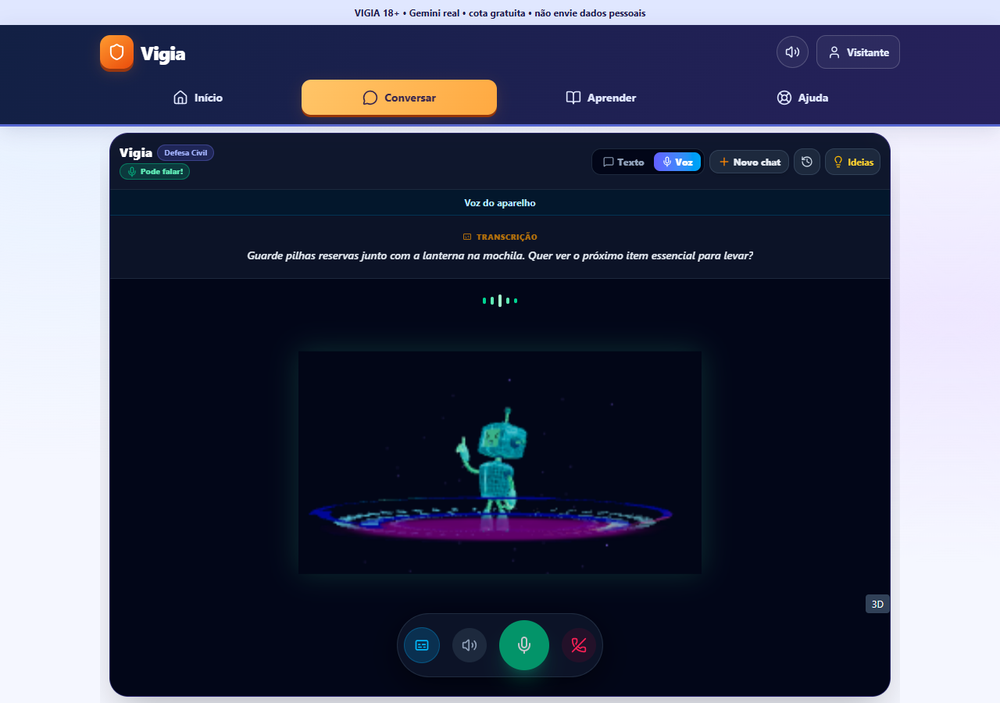

Conversa mais natural e carregamento mais leve
Vigia • 14 de outubro de 2026 • exclusivo para adultos • serviços pagos bloqueados
Este relatório preserva a rodada anterior. A correção mais recente da voz Google, seus testes e sua publicação estão em Voz Google: continuidade e menos espera.
O que mudou
- A transcrição e a resposta completa são verificadas no Gemini 3.5 Flash-Lite antes de liberar texto e voz. Gemini 3.8 Flash-Lite TTS gera Aoede em fluxo; o primeiro áudio pode tocar antes de terminar toda a síntese.
- O projeto gratuito consultado no AI Studio oferece 3 solicitações/minuto e 10/dia nesse TTS. Ao atingir sua cota antes de liberar áudio, o aplicativo pode usar uma leitura gratuita do mesmo texto no Gemini 3.8 Live. A leitura alternativa só toca depois de conferir a transcrição integral: palavras, negação, números e símbolos não podem mudar. Áudio silencioso, insuficiente, divergente ou incompleto é bloqueado. O Live também tem limites; não há garantia de disponibilidade contínua.
- Se a voz continuar indisponível, a resposta real permanece no histórico e o microfone pausa. A sessão e seu contexto são preservados. Há espera antes de tentar novamente e “Continuar por texto”. A nova escolha explícita “Voz do aparelho”, antes da primeira pergunta, ou “Usar voz do aparelho”, após uma falha, lê a resposta completa verificada e mantém a mesma conversa. O consentimento informa possível processamento pelo fabricante. Essa escolha vale somente para a sessão atual; os próximos turnos mantêm transcrição e respostas reais do Gemini e dispensam a síntese cloud. Voz brasileira local é preferida quando existe.
- Na leitura do aparelho, a captura fica pausada e a interrupção usa o botão. O término real retoma o microfone somente se o usuário não tiver pausado. Silenciar, encerrar, trocar conta, abrir histórico e falhas cancelam a leitura sem reativação tardia. Uma captura legada paralela encontrada nos testes locais foi removida antes da publicação; testes agora exigem uma única captura por sessão. Números decimais não são divididos entre frases; erros não pulam trechos nem fingem leitura concluída.
- Tom acolhedor, expressivo, breve e interessado, com próximos passos úteis. Emergências conservam orientações oficiais e são salvas antes de encerrar a sessão, sem gerar resposta ou pontuação de risco com IA.
- Volume, pausa, retomada e interrupção controlam recursos reais. A pausa continua acessível enquanto a Vigia fala. Fala sustentada pode interromper áudio, com cancelamento de fragmentos tardios. Eco e microfone físicos ainda não foram avaliados.
- Nova conversa e abertura de histórico encerram a voz anterior antes de mudar as mensagens. Respostas atrasadas não podem cair em outra conversa ou conta. O histórico aberto não é sobrescrito.
- Falhas HTTP temporárias do Gemini (500/502/503/504) permitem somente uma nova tentativa, após 700 ms e dentro do prazo original. Cota, permissão, cancelamento e segurança não repetem. O turno de voz tem prazo total de 20 segundos. A leitura alternativa tem até 15 segundos dentro desse prazo. Falhas não são substituídas por respostas prontas; nenhuma opção paga é ativada.
- Acesso adulto, consentimento, origens permitidas, ticket único, limites de conexão, frames e bytes permanecem. Chaves ficam no servidor. O TTS principal usa store false; a alternativa recebe somente o texto completo verificado, sem microfone, histórico, ferramentas ou instruções do usuário.
- A primeira tela carrega antes dos módulos de conta e atividades. Arquivos versionados usam cache persistente. Vite é importado somente no desenvolvimento. Visual, cores, atividades, recompensas e permissões foram preservados.
Resultados da rodada
| Verificação | Resultado |
|---|
| Dados, segurança e aprendizado | 31 passaram |
| IA e voz, incluindo leitura literal, cota, cancelamento, silêncio e saída do aparelho | 83 passaram |
| Configuração de publicação | 5 passaram |
| Controles em desktop e celular emulado, provedor simulado | 8 passaram |
| Recuperação, isolamento, emergência e consentimento da leitura no aparelho, simulações | 26 passaram (13 por interface) |
| Voz do aparelho em desktop e celular emulado: consentimento, contexto, única captura, controle e limpeza; simulações | 30 passaram (15 por interface). Captura única confirmada após 500 ms e nenhuma reativação após troca de UID, histórico ou encerramento. |
| Duas falas sintéticas adultas pelo microfone do Chrome; transcrição e respostas Gemini reais, síntese real do Windows com som silenciado | Passou: duas transcrições e respostas reais, leitura integral de todos os trechos com Microsoft Daniel pt-BR local, contexto e histórico, uma única captura e todas as tracks encerradas. Não avalia qualidade audível ou microfone físico. |
| Prova anterior do caminho Google: duas perguntas enviadas por texto ao canal de voz, cota TTS simulada; respostas e leitura Live reais | Passou: contexto preservado e duas falas integrais; apenas uma tentativa do TTS principal. Não testa a transcrição de duas entradas faladas. As falhas posteriores desse caminho permanecem registradas abaixo. |
| Tipos e builds de apresentação e publicação | Passaram |
As regras do Firestore não mudaram nesta rodada; o emulador não foi repetido. Resultados anteriores estão em validação anterior. Os testes de voz usam frases fictícias de adultos; testes simulados estão identificados separadamente.
Publicação
Publicação confirmada como Live no Render: revisão 09655c3cc905732a770a09efa18d286fdab9089c, implantação dep-db81ltdg1s2s738mjvt0, 14/10/2026 às 21:14:45 (Brasília), concluída em 1 min 53 s. Endereço: https://vigia-app.onrender.com/.
A revisão publicada passou nas 20 verificações de interface em desktop/celular emulado: acesso 18+, login, chat e imagem Gemini reais, histórico Firebase, rede indisponível, microfone negado, aprendizado/XP, troca de conta e Sala Segura. As falhas de rede e a recusa do microfone são simuladas. Passaram também 8 verificações dos controles com provedor/microfone simulados.
A prova online de duas falas sintéticas adultas passou: duas transcrições e respostas Gemini reais, contexto preservado, síntese real de todos os trechos com Microsoft Daniel pt-BR local, uma única captura, histórico sem duplicação e todas as tracks encerradas. A saída foi silenciada; não é uma avaliação de qualidade audível nem de microfone físico. A opção selecionada dispensou o TTS cloud nos dois turnos.
Os 119 testes automatizados locais, 56 verificações simuladas da nova recuperação/leitura e os builds passaram. A primeira tela final online carregou 191.231 bytes de JavaScript, navegação em 1.623 ms e primeiro conteúdo em 2.480 ms, com celular emulado e servidor ativo. Na prova de voz do aparelho, o intervalo de processamento até o início real da síntese foi 8.636 e 3.079 ms online; a prova local foi 6.249 e 2.644 ms. São amostras individuais; incluem transcrição e geração da resposta, sem medir partida após suspensão.
A revisão anterior 0bb28a4 passou em 2 verificações de voz real no Chrome com uma fala sintética adulta, histórico e liberação de recursos, e 8 verificações de controles simulados. Duas perguntas enviadas por texto ao mesmo canal de voz também passaram, com contexto real e áudio nos dois turnos. Na revisão intermediária bab0512, 20 verificações de interface com Gemini/Firebase reais e 24 de recuperação simuladas passaram. Esses resultados históricos não substituem a revalidação da revisão atual.
Duas provas adicionais de microfone sintético na revisão anterior 0bb28a4 encontraram transcrição divergente na primeira leitura alternativa do Google. O áudio foi bloqueado e a transcrição de entrada e a resposta real em texto foram preservadas. A mesma frase passou numa prova isolada local (7.294 ms, 1.158.240 bytes PCM), confirmando intermitência. O bloqueio permanece; a opção do aparelho foi acrescentada para continuar a mesma sessão sem depender desse TTS. Não há garantia de conversa Google contínua e ilimitada.
Falhas anteriores permanecem documentadas: f170c8a encontrou cota do TTS; bab0512 encontrou áudio insuficiente e transcrição divergente, ambos bloqueados sem perder texto; c6c2554 encontrou indisponibilidade temporária do Gemini antes da síntese. Os reforços seguintes corrigiram tratamento de conclusão do áudio e adicionaram uma única tentativa para HTTP temporário. O prazo também é rechecado antes de liberar respostas de adaptadores que ignorem cancelamento.
Desempenho observado
Na rodada publicada anterior, o primeiro áudio após o fim da pergunta passou de 6.843 para 3.343 ms (redução de 51,1%), com TTS em fluxo. São amostras individuais, servidor ativo e fala fictícia. A conversa nativa intermediária demorou 10.020 ms e não foi adotada como padrão.
Na prova local da leitura alternativa, somente a síntese da frase fictícia levou 3.007 ms. O teste completo com duas respostas reais e cota TTS simulada levou 8.068 e 6.436 ms até o primeiro áudio, incluindo geração textual e verificação da leitura. Essa alternativa pode demorar mais que o TTS em fluxo. A prova anterior levou 10.852 e 6.229 ms; variação relevante foi observada.
A primeira tela 18+ passou de 1.234.302 para 191.231 bytes de JavaScript descomprimido: redução de 84,5%. Os demais módulos carregam depois. Isso não significa redução equivalente do aplicativo inteiro.
Tempo de resposta varia com rede, aparelho, tamanho da fala, cota e disponibilidade do Google. O Render gratuito pode esperar cerca de um minuto para iniciar após longa inatividade; essa limitação da hospedagem não foi eliminada.
Roteiro curto para conferir
- Abra o Vigia. Em Ajuda, escolha “Atualizar Agora” se aparecer “Nova versão!”. Dados e histórico do aparelho são preservados.
- Entre em Conversar e selecione Voz. Leia o consentimento e permita o microfone somente para sua própria fala adulta, sem informações pessoais ou conteúdo de menores.
- Para a opção validada sem depender da cota de síntese Google, selecione “Voz do aparelho” e aceite o aviso. Aguarde a indicação de escuta. O Gemini continua transcrevendo e respondendo de verdade; a voz é a disponível no dispositivo, claramente identificada.
- Pergunte “Onde devo guardar a lanterna da mochila de emergência?”. Após terminar a resposta, pergunte “E as pilhas dela?”. Confira a continuidade. Teste pausa e retomada; durante a leitura, interrompa pelo botão. Encerre e abra o histórico: as duas perguntas e respostas devem aparecer uma vez cada.
- Se preferir a voz Google e ocorrer falha, confira o texto completo. “Usar voz do aparelho” muda a saída da mesma sessão e lê essa resposta; “Continuar por texto” encerra a captura. A leitura depende das vozes disponíveis e do consentimento apresentado.
- O roteiro passou no Chrome com falas sintéticas adultas. Antes de apresentar num aparelho físico, ainda é necessário conferir seu microfone, suas vozes e sua rede. Não foi validado em celular físico, Safari ou após longa suspensão do servidor.

Captura do teste online com conteúdo fictício. As respostas deste fluxo foram geradas de verdade; simulações da bateria de controles estão identificadas separadamente no relatório.
Limitações e correções durante os testes
O teste de XP repetido esperava recompensa numa missão já concluída; foi corrigido sem redefinir progresso. A primeira prova nativa de duas perguntas perdeu transcrição durante reprodução; o adaptador anterior foi corrigido. O teste de microfone usava gravação em repetição; passou a reprodução única.
A prova da nova leitura literal encontrou JSON em frames binários, transcrições protobuf vazias e um limite de saída curto demais. Esses formatos foram tratados sem relaxar o vínculo entre texto e áudio. Uma configuração com temperatura zero produziu áudio excessivo; a geração foi bloqueada. A configuração final usa temperatura 0,5 e limite de 800 tokens, validada com duas falas reais completas. Quando só havia áudio insuficiente no fim da geração, o adaptador foi reforçado para aguardar o fechamento do turno e revalidar transcrição, duração e energia, sem tocar áudio parcial. Respostas divergentes continuam bloqueadas.
Microfone físico, celular físico, Safari, cancelamento de eco em ambiente real e desempenho após longa inatividade não foram testados. O gratuito não permite prometer conversa contínua sem limites. A leitura do aparelho passou tanto em simulações de controle quanto em síntese real do Windows no Chrome isolado, com saída silenciada. Qualidade audível e disponibilidade das vozes em outros aparelhos continuam sem avaliação física. Nenhum faturamento foi ativado.
O Gemini gratuito pode permitir revisão humana do conteúdo enviado; não envie dados pessoais, confidenciais ou de menores. Declaração 18+ não verifica identidade nem concede papel escolar. Limitações anteriores de verificação externa e retenção/exclusão de contas continuam documentadas.
Fontes: preços e modalidades gratuitas, limites de uso, protocolo Live, síntese de voz, Render gratuito.